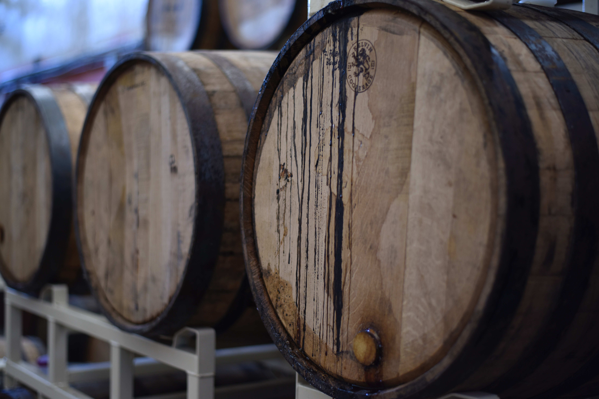

Vinos
Color

Champagne
Espumante

Los vinos de Champagne son vinos que combinan efervescencia y espuma. El control de estos dos fenómenos supone un conocimiento científico que ha apasionado a los productore de Champagne y actualmente se puede explicar mejor toda su complejidad.
Whisky
Añejamiento
Una vez terminada la destilación, las barricas de roble se llenan y se guardan en la bodega. Tras sus pesadas puertas, el whisky madura muy lentamente hasta llegar a convertirse en un whisky profundamente escocés. Para favorecer un añejamiento armónico, la tasa de humedad y la temperatura ambiente se controlan con precisión. Durante como mínimo tres años, la serenidad que reina en las bodegas únicamente se verá turbada por el paso de las estaciones. Para alcanzar la perfección, la palabra clave es equilibrio en el interior de la bodega.
Vodka
Pureza
La palabra vodka tiene origen en la expresión rusa zhiznennia voda, que significa “agua de vida”, pero que con el paso del tiempo se transformó hasta llegar a ser sólo wódka, que significa “agüita”. El espirituoso fue nombrado de esta forma debido a su pureza, al ser una bebida incolora y carente de sabor, pero con potencia y cualidades únicas.


Ron
Dulzor
El ron es una bebida alcohólica, elaborada a partir de la fermentación y destilación de la melaza o el jugo de la caña de azúcar. La mayoría de su producción se encuentra en las Américas, y concretamente el Caribe, aunque también se da en otros países como las Filipinas o la India.
